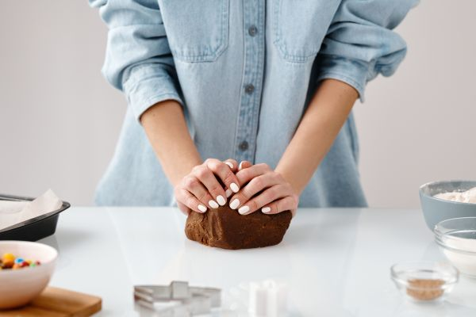

5. Schackrutor

Schackrutor är klassiska småkakor med ett dekorativt rutmönster av ljus och chokladsmakande mördeg. De ser festliga ut men är enkla att baka.
Ger: cirka 50 kakor.
Ingredienser
- 200 g smör
- 1 dl strösocker
- 4,5 dl vetemjöl
- 2 tsk vaniljsocker till den ljusa degen
- 2 msk kakao till den mörka degen
Gör så här
- Låt smöret bli mjukt i rumstemperatur.
- Vispa ihop smör och socker.
- Tillsätt mjölet lite i taget och arbeta ihop degen.
- Dela degen i två lika stora delar.
- Arbeta in kakao i den ena delen och vaniljsocker i den andra.
- Dela varje deg i två delar så att du får två ljusa och två mörka delar.
- Rulla delarna till längder och platta till sidorna.
- Lägg längderna tätt intill varandra, två ovanpå två, så att ett rutmönster bildas.
- Låt degen vila i kylskåpet i 1–2 timmar.
- Värm ugnen till 200 °C.
- Skär degen i skivor som är cirka 3–4 mm tjocka.
- Lägg kakorna på en plåt med bakplåtspapper och grädda i 8–10 minuter.